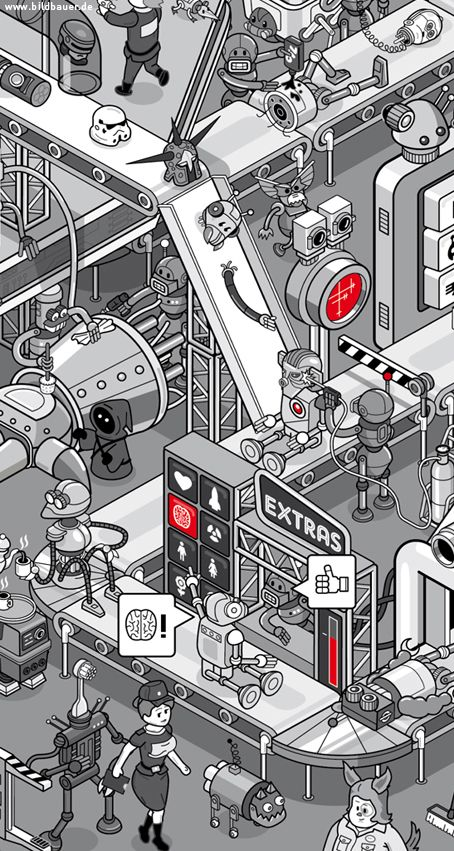
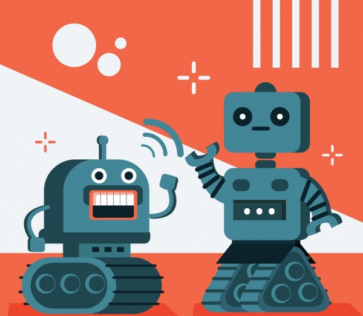

Apa itu Robotik?
Robotika adalah bidang yang menggabungkan ilmu komputer, teknik elektro, dan mekanika untuk menciptakan mesin cerdas yang dapat membantu manusia dalam berbagai aspek kehidupan. Dari industri manufaktur hingga teknologi medis, robot memainkan peran penting dalam meningkatkan efisiensi dan akurasi kerja.
Dengan kemajuan kecerdasan buatan (AI) dan pembelajaran mesin, robot kini semakin cerdas dan mampu beradaptasi dengan lingkungan mereka. Di era modern, robot tidak hanya digunakan di pabrik, tetapi juga dalam eksplorasi luar angkasa, transportasi, bahkan dalam kehidupan sehari-hari seperti asisten rumah tangga dan perangkat otomatisasi.
Mari jelajahi lebih dalam dunia robotik dan bagaimana teknologi ini membentuk masa depan!
-vokasi kemendibud

Mengapa Robotik Penting?
Robotik memainkan peran krusial dalam berbagai aspek kehidupan manusia, mulai dari industri hingga kehidupan sehari-hari. Robot dapat meningkatkan efisiensi dan produktivitas karena mereka bekerja lebih cepat dan lebih presisi dalam berbagai tugas. Selain itu, robot juga membantu meningkatkan keamanan dan keselamatan dengan menggantikan manusia dalam lingkungan berbahaya. Dalam dunia medis, robot berperan dalam operasi, rehabilitasi, dan perawatan pasien, mendukung inovasi yang semakin maju.
Robot juga memungkinkan eksplorasi lingkungan ekstrem, seperti luar angkasa dan dasar laut, di mana manusia sulit bertahan. Selain itu, otomatisasi dalam kehidupan sehari-hari semakin berkembang, mulai dari asisten rumah tangga hingga kendaraan otonom yang membuat aktivitas lebih efisien. Dengan kemajuan teknologi, robotik akan terus membawa inovasi yang mengubah cara kita hidup dan bekerja!
- deltamitra